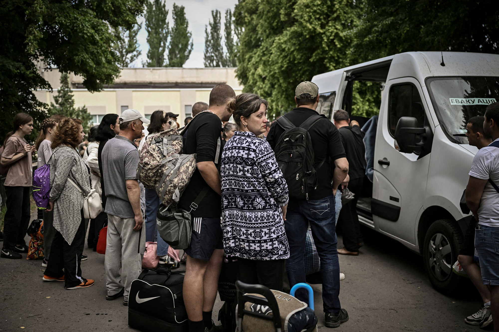

First UK flight sending asylum-seekers to Rwanda to go ahead after appeal fails
The Ukrainian military says fighting continues in the east of the country, specifically in the Luhansk and Donetsk regions.
Said Russian forces are intensifying their attacks as they try to advance from several directions and take more of the area. Ukraine's military says that Russian units are being reinforced on the approaches to Sloviansk, and have had "partial success" in the ongoing combat in the eastern city in the Donetsk region. The General Staff said Friday that Russian forces are preparing to resume an offensive towards Sloviansk. It said that the Russians are concentrating a force of up to 20 battalion tactical groups in the area. The Russians had tried to launch an attack on two towns north and northwest of Sloviansk — Barvinkove and Sviatohirsk — but had been unsuccessful, the General Staff said. In the south, Ukrainian forces say they have made significant progress during an offensive against Russian positions in the region of Kherson. Here's what else to know:Battle in the east: The UK Ministry of Defence expects Russia to take control of the whole of the Luhansk region in eastern Ukraine within the next two weeks. The ministry said that after failing to take Kyiv, Moscow has changed its strategy in Ukraine to focus on the Donbas.
100 days of war: Kremlin spokesperson Dmitry Peskov assessed the results of the war in Ukraine so far, saying "certain results" have been achieved and work will continue until all goals are met. He continued to call it a "special military operation." Ukrainian President Volodymyr Zelensky said in a video message that Ukrainians have been defending their country for 100 days against Russian aggression and that "victory shall be ours." Meanwhile, the International Committee of the Red Cross said on Friday the scale of the destruction in Ukraine due to Russia's invasion “defies comprehension.” Potential for ceasefire: The US and its allies are placing a renewed emphasis on the need for a negotiated settlement to end the war. US officials have in recent weeks been meeting regularly with their British and European counterparts to discuss potential frameworks for a ceasefire.When asked whether Ukraine needs to cede part of its territory to achieve peace and end the Russian invasion, US President Joe Biden told reporters Friday in Delaware: “I’m not going to tell them what they should and shouldn’t do." Biden did add that it “appears” at some point there will need to be a “settlement” between the two countries, adding “what that entails, I don’t know.” Sanctions: The European Council has formally adopted the sixth package of sanctions against Russia. The Council said the sanctions impact areas such as oil embargo, broadcasting, export restrictions and consulting restrictions. OSCE members call for another fact-finding mission: Forty-five member states in the Organization for Security and Cooperation in Europe (OSCE) have once again called for a fact-finding mission into human rights abuses, war crimes and potential crimes against humanity being committed in Ukraine. This is the second time the Moscow Mechanism — the OSCE's procedure to investigate human rights abuses — has been invoked since Russia's war in Ukraine began on Feb. 24. Impacts of military sonars: Injured and dead dolphins have been washing up on the coast of the Black Sea after being hurt or killed by powerful military sonars, according to researchers in Ukraine. Several studies in the past have confirmed that these types of sonars are harmful to marine life.